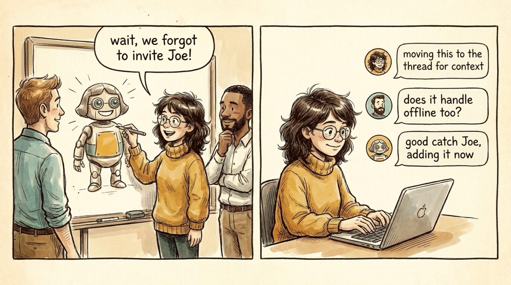

<section id="r02" data-transition="fade" style="background:#F5EEE0;color:#222222;font-family:Arial, Helvetica, sans-serif;padding:0;display:flex;flex-direction:column">

<aside>Everything starts as a conversation. We used to share context verbally; now it's Slack + Meet, captured. The unlock: AI can have the SAME context humans do -- Joe (human) and Robo-Maya (AI) both reply in the thread.</aside>
</section>
